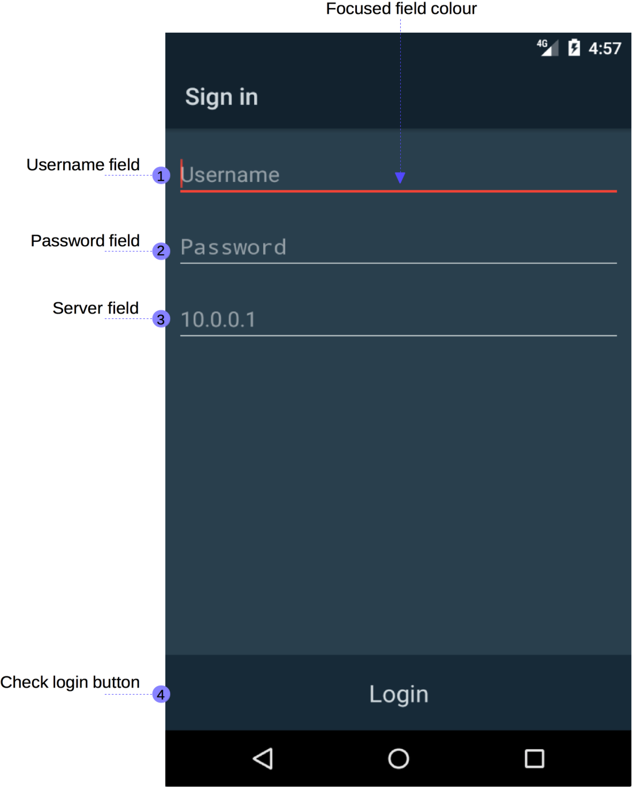

Using the Mobile Application¶
This chapter discerns details about different aspects of the mobile application. An overview heads the chapter, which lays out the purpose and overall functionality of the mobile application. The other sections cover each major stage of using the mobile application.
Overview¶
The mobile application has a simple and intuitive process that allows a mobile resource driver to efficiently navigate to an emergency event. A mobile resource driver is an individual who drives a team of first responders to an emergency event, generally being either a police officer, ambulance driver or firefighter. They are allocated emergency events to respond to by the server, and have the option to accept, decline and delay the request. To identify the mobile resource the mobile resource driver must login to the server’s authentication system using the mobile application. Responding to requests as well as navigation to requests is also achieved through the mobile application.
The Login Process¶
Logging into the mobile application is very simple. To authenticate with the server application, the mobile application must authenticate using a registered account. How to add accounts can be viewed in the registering an account section of the web application’s documentation.
{kind=link}
The above figure displays an annotated login screen. Annotations 1 and 2 relate to the login fields, being the username and password of the account. Below these fields is the server address field, which is the ip address that the application authenticates the account information with.
The final annotation (4) identifies the login button at the bottom of the screen. If the username and password are entered the mobile application attempts to login the user. If the user’s credentials are correct the user is logged into the system.